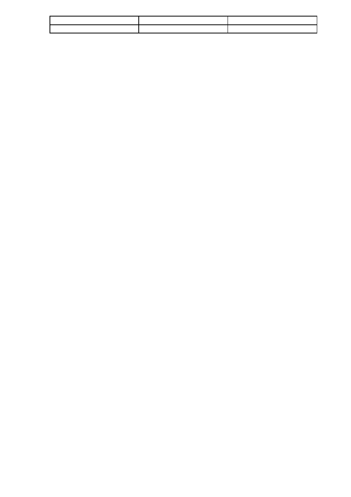
Numele şi prenumele
Semnătura
Data
CHESTIONAR EXAMEN ACORDARE/PRELUNGIRE
LICENŢĂ PILOT AERONAVE ULTRAUŞOARE
CLASA PARAPANTĂ
PRINCIPIILE ZBORULUI
1. Finetea aerodinamica este:
a. raportul dintre Cx si Cz
b. raportul dintre vectorul viteza si greutate
c. descrie calitatea suprafetei portante
2. Finetea aerodinamica este influentata de :
a. lungimea suspantelor
b. clasa de omologare a parapantei
c. directia vantului
3. Forta portanta se genereaza:
a. 2/3 pe extrados
b. 2/3 pe intrados
c. ½ pe extrados si ½ pe intrados
4. Viteza minima de infundare este influentata de :
a. viteza de zbor
b. lungimea suspantelor
c. directia si viteza vantului
5. Unghiul de incidenta este dat de :
a. coarda profilului si directia curentului de aer relativ
b. extradosul aripii si orizontala
c. coarda profilului si orizontala
6. Cand unghiul de incidenta creste:
a. creste portanta, scade viteza
b. creste portanta, creste viteza
c. scade portanta, scade viteza
7. Desprinderea stratului limita apare cand:
a. creste unghiul de incidenta pana la unghi critic
b. scade unghiul de incidenta la o valoare inferioara unghiului critic
c. se elibereaza comenzile
8. Forta portanta este influentata de :
a. unghiul de incidenta
b. viteza vantului
c. directia vantului
9. Unghiul de atac critic duce la:
a. desprinderea stratului limita
b. cresterea portantei la nivel maxim
c. lipirea fileurilor de aer de extrados

10. Centrul de presiune este:
a. mobil sau fix functie de tipul profilului aerodinamic
b. fix.
c. mobil in toate cazurile
11. Angajarea apare :
a. la viteza maxima de zbor
b. la atingerea vitezei minime de infundare
c. la atingerea unghiului de incidenta critic
12. Dupa legea lui Bernoulli:
a. cand viteza creste, scade presiunea
b. cand viteza creste, creste si presiunea
c. nu are legatura cu viteza de curgere a fluidelor
13. Din polara putem deduce:
a. viteza minima de infundare
b. greutatea maxima de zbor
c. unghiul maxim de inclinare in zbor normal
14. Alungirea aripii este:
a. raportul dintre coarda medie si anvergura
b.raportul dintre profunzimea maxima a aripii si anvergura
c. raportul dintre grosimea maxima relativa a profilului si anvergura
15. Rezistenta indusa este data de :
a. turbioanele de la capetele aripii
b. rezistenta la inaintare a intregii aripii plus cea a suspantelor
c. rezistenta la inaintare generata de voalura
16. In cazul aripii eliptice, la aripa fara torsiune geometrica, stratul limita se desprinde
incepand cu:
a. capetele de aripa
b. zona centrala a aripii
c. paralel cu bordul de atac, in acelasi timp de-a lungul anvergurii
17. Aripa de parapanta prezinta torsiune geometrica:
a. da
b. nu
c. torsiunea geometrica nu are legatura cu mecanica zborului
18. Coarda profilului defineste:
a. linia ce uneste punctele extreme ale profilului, din zona bordului de atac si din
zona bordului de fuga
b. linia ce uneste bordul de fuga cu directia de curgere a fileurilor de aer
c. curbura liniei extradosului
19. Care dintre urmatoarele afirmatii este adevarata:
a. la cresterea unghiului de incidenta scade viteza
b. la cresterea unghiului de incidenta scade portanta
c. la cresterea unghiului creste viteza

20. Care dintre urmatoarele afirmatii este adevarata:
a. rezistenta indusa este influentata de inaltimea de zbor
b. rezistenta indusa are legatura cu rezistenta la rupere a suspantelor
c. rezistenta indusa nu are lagatura cu zborul
21. Care dintre urmatoarele afirmatii este adevarata:
a. rezistenta la inaintare este direct proportionala cu patratul vitezei
b. rezistenta la inaintare este invers proportinala cu patratul vitezei
c. rezistenta la inaintare este direct proportionala doar cu aria sectiunii
22. Teoria care sta la baza zborului cu parapanta face parte din:
a. domeniul fluidelor compresibile
b. domeniul fluidelor incompresibile
c. nu are lagatura cu compresibilitatea
23. Care dintre urmatoarele nu face parte din domeniul aerodinamicii:
a. rezistenta ohmica
b. rezistenta indusa
c. rezistenta parazita
24. Viteza de curgere a fileurilor de aer pe un profil aerodinamic este:
a. mai mare pe extrados decat pe intrados
b. mai mare pe intrados decat pe extrados
c. egala intrados cu extrados
25. Turbioanele terminale responsabile pentru rezistenta indusa apar:
a. pe capetele aripii
b. in spatele aripii (siaj)
c. in spate si sub aripa
26. Centrul de presiune este:
a. fix sau mobil functie de tipul profilului
b. mobil
c. nu exista aceasta notiune in aviatie
27. Centrul de presiune se regaseste intotdeauna la nivelul:
a. in jumatatea dinainte a aripii
b. bordului de fuga in zona centrala a aripii
c. bordului de atac al aripii
28. In care din urmatoarele cazuri viteza de angajare creste:
a. creste incarcarea alara
b. scade viteza de zbor fata de sol
c. micsoram numarul de suspante
29. La atingerea unghiului de atac critic:
a. portanta scade brusc, iar rezistenta la inaintare creste brusc
b. portanta creste proportional cu scaderea vitezei
c. portanta creste proportional cu viteza
30. Desprinderea stratului limita apare:
a. la atingerea unghiului de atac critic
b. la atingerea vitezei minime de zbor
c. la atingerea vitezei maxime de zbor

31. Conform teoremei lui Bernoulli atunci cand sectiunea unui tub se micsoreaza:
a. viteza de curgere creste iar presiunea statica scade
b. viteza de curgere creste iar presiunea statica creste
c. viteza de curgere scade iar presiunea statica creste
32. Din polara vitezelor putem deduce:
a. viteza minima de infundare, viteza la finete maxima, viteza maxima de zbor
b. viteza maxima in viraj
c. viteza de zbor in functie de altitudine
33. Infundarea minima se obtine :
a. la o viteza inferioara vitezei la finete maxima
b. la o viteza egala cu viteza la finete maxima
c. la o viteza mai mare decat viteza la finete maxima
34. Finetea parapantei reprezinta:
a. unghiul de panta in zbor exprimat printr-un raport
b. calitatea finisajului extradosului si intradosului
c. coeficientul de frecare cu aerul al intregului ansamblu: voalura, suspante, pilot
35. Finetea aerodinamica a parapantei este influentata de :
a. valoarea rezistentei la inaintare
b.valoarea vitezei maxime de zbor
c. valoarea vitezei de angajare
36. Care dintre urmatoarele afirmatii este adevarata:
a. presiunea dinamica este influentata de viteza
b. presiunea statica este intotdeauna egala cu presiunea dinamica
c. presiunea dinamica este influentata de altitudine
37. Pentru a imbunatati finetea unei parapante putem sa:
a. folosim o seleta profilata (cocon)
b. marim suprafata portanta
c. sa micsoram suprafata portanta
38. In zbor planat stabilizat forta portanta este:
a. mai mica decat greutatea
b. mai mare decat greutatea
c. egala cu greutatea
39. Angajarea in limita de viteza apare ca urmare:
a. ruperii fileurilor de aer de pe extrados
b. ruperii fileurilor de aer de pe intrados
c. zborului la viteza minima
40. In timpul procedurii de decolare unghiul de atac este:
a. variabil
b. fix
c. variaza doar daca se actioneaza acceleratorul
41. Care din urmatoarele au drept consecinta cresterea finetei unei parapante:
a. micsorarea numarului de suspante
b. scaderea incarcarii alare
c. cresterea greutatii totale

42. Profilul aripii este dat de :
a. membranele intercheson
b. proiectia aripii pe un plan orizontal
c. suprafata aripii desfasurata
43. Viteza minima de infundare este:
a. mai mica decat viteza la finete maxima
b. mai mare decat viteza la finete
c. egala cu viteza la finete
44. Regimurile de zbor ale parapantei sunt:
a. viteza minima, viteza maxima, viteza accelerata
b. viteza la infundare minima, viteza la finete maxima, viteza maxima
c. viteza de angajare, viteza maxima, viteza la finete
45. Stratul limită este:
a. stratul de aer din imediata vecinătate a aeronavei în care viteza creşte de la
zero la viteza de zbor
b. stratul de aer format când avionul este în limită de viteză
c. stratul de aer care inconjoara profilul aerodinamic la unghi de incidenta critic
46. Grosimea unui profil aerodinamic este:
a. cea mai mare distanţă dintre extrados şi intrados
b. media grosimilor secţiunilor profilului
c. constantă.
47. Rezultanta forţelor aerodinamice profilului are punctul de aplicatie în:
a. centrul de presiune
b. centrul geometric al aripii
c. centrul de greutate
48. In zbor orizontal centrul de greutate este situat:
a. sub centrul de presiune
b. deasupra centrului de presiune
c. coincide cu centrul de presiune
49. Cantitativ forta portanta este :
a. variabila in functie de viteza de zbor
b. constanta in functie de viteza de zbor
c. constanta in toate cazurile cu exceptia angajarii
50. Lungimea suspantelor poate influenta finetea parapantei:
a. da
b. nu
c. numai o data cu cresterea incarcarii alare.
51. Incarcarea alara se refera la :
a. raportul dintre greutatea totala in zbor si suprafata portanta
b. greutatea mazima in zbor
c. greutatea maxima suspendata
52. Cresterea incarcarii alare modifica performantele parapantei:
a. da
b. nu
c. incarcarea alara nu are legatura cu domeniul zborului

53. La actionarea in jos a comenzilor unghiul de incidenta:
a. creste
b. scade
c. ramane constant
54. La cresterea vitezei de scurgere a fileurilor de aer pe extrados:
a. scade presiunea statica
b. creste presiunea statica.
c. presiunea statica ramane constanta
55. Care dintre urmatoarele fenomene nu au legatura cu aerodinamica:
a. legea distributiei maselor
b. legea lui Bernoulli,
c. efectul Coanda
56. Efectul Coanda este influentat de unghiul de incidenta?
a. da
b. nu
c. doar la unghiuri de incidenta subcritice
57. La micsorarea unghiului de incidenta :
a. viteza de zbor creste
b. viteza de zbor scade
c. viteza de zbor ramane constanta
58. La cresterea unghiului de incidenta se poate ajunge la angajare numai cand:
a. se atinge unghiul critic
b. se atinge viteza minima de infundare
c. se atinge viteza la finete
59. Fata de zborul orizontal, in timpul virajului, viteza de angajare :
a. creste
b. scade
c. ramane neschimbata
60. Forta centrifuga actioneaza toteauna:
a. spre exteriorul virajului
b. spre interiorul virajului
c. spre in sus
61. Cele 4 forte care actioneaza pe un profil aerodinamic sunt:
a. greutatea, portanta, rezistenta la inaintare, viteza
b. greutatea, portanta, forta centrifuga viteza
c. portanta, greutatea, forta centrifuga, rezistenta la inaintare
62. Fortei portante i se opune:
a. greutatea
b. viteza
c. rezistenta la inaintare
63. Rugozitatea unei suprafete portante duce la:
a. cresterea rezistentei la inaintare
b. cresterea vitezei de zbor
c. scaderea sarcinii maxime admise

64. Care dintre urmatoarele afirmatii este adevarata:
a. finetea depinde de viteza de zbor
b. finetea maxima se obtine la viteza de angajare (minima de zbor)
c. finetea maxima se obtine la viteza maxima de zbor.
65. Care dintre urmatoarele afirmatii este adevarata:
a. viteza minima de infundare si finetea sunt caracteristici importante ale
parapantei
b. viteza de infundare a parapantei este indiferenta de viteza de zbor
c. viteza minima de infundare a parapantei se obtine la viteza minima de zbor
66. Presiunea dinamica masurata in interiorul aripii variaza:
a. in functie de viteza de zbor
b. in functie alungirea parapantei
c. in functie de grosimea maxima relativa a profilului parapantei
67. Trompa lui Venturi demonstreaza:
a. legea Bernoulli
b. efectul Coanda
c. aparitia rezistentei la inaintare
68. Polara aripii de parapanta descrie:
a. caracteristicile de zbor ale parapantei
b. forma aripii in plan
c. forma sheletului profilului aerodinamic
69. La parapanta, relatia de ordonare intre Vangajare, Vmax, Vfinete-maxima si
Vinfundare-minima este:
a. Vinfundare-minima < Vangajare < Vfinete-maxima < Vmax
b. Vangajare < Vinfundare-minima < Vfinete-maxima < Vmax
c. Vangajare < Vfinete-maxima < Vinfundare-minima < Vmax
70. In momentul angajarii unei parapante
a. Presiunea in comenzi scade brusc
b. Viteza de inaintare creste brusc
c. Viteza de infundare creste brusc
71. Incarcarea aripii in zbor planat stabilizat este definita ca si
a. Tensiunea din suspante exprimata in Kg/ml
b. Greutatea pilotului plus greutatea seletei si a aparatelor de zbor
c. Raportul dintre greutatea totala in zbor si suprafata aripii
72. Ce se intampla daca marim incarcarea pe aripa:
a. creste finetea maxima
b. toate vitezele cresc, inclusiv viteza de angajare
c. viteza de angajare ramine nemodificata deoarece este o caracteristica a
profilului
73. Intr-un viraj strans cu unghi de inclinare accentuat sarcina pe aripa
a. scade
b. creste
c. ramine constanta doarece greutatea sistemului si suprafata aripii nu se
modifica

74. Rezistenta la inaintare se datoreaza:
a) formei profilului
b) rezistentei induse
c) frecarii aerului cu toate componentele aflate in zbor
75. La parapanta, stabilitatea in jurul axei transversale (axa ce uneste capetele aripii) se
datoreaza in special
a. vitezei relativ mici la care zboara
b. profilului aripii
c. efectului de pendul (centrul de greutate se afla mult mai jos decit centrul
de presiune)
76. Alegeti afirmatia falsa:
a. parapanta are profil aerodinamic
b. parapanta nu are profil aerodinamic
c. profilul aerodinamic al parapantei poate fi identificat ca proiectia
acesteia pe un plan orizontal
77. Care dintre urmatoarele notiuni se regasesc in aviatie:
a. bord de atac, intrados
b. tribord, velatura
c. cordaj, rezistenta ohmica
78. Alegeti afirmatia falsa:
a. intradosul aripii este in partea inferioara a profilului
b. extradosul aripii este in partea superioara a profilului
c. intradosul este in partea superioara a profilului
79. Alegeti afirmatia corecta:
a. distanta dintre punctele de acrosaj a seletei modifica comportamentul
parapantei in zbor
b. distanta dintre punctele de acrosaj a seletei modifica nu comportamentul
parapantei in zbor
c. distanta dintre punctele de acrosaj a seletei este importanta la testele de
omologare
80. Uzura parapantei apare ca urmare a :
a. expunerii la radiatia solara (UV)
b. frecarii cu solul si cu microparticulele din aer
c. presiunii dinamice din interiorul voalurii in zbor
81. Greutatea totala in zbor se calculeaza:
a. parapanta+seleta+pilot complet echipat+parasuta de siguranta
b. pilot+seleta+parasuta de siguranta
c. pilot+seleta
82. In timpul unui viraj strans :
a. viteza de angajare creste
b. viteza de angajare scade
c. viteza de angajare ramane neschimbata

83. Cum se explica tendinta de viraj in cazul inchiderilor asimetrice:
a. aripa deformata (inchisa) are rezistenta la inaintare mai mare decat cea
ramasa deschisa
b. comanda corespunzatoare aripii inchise are efect mai mare, la aceeasi cursa
c. inchiderile asimetrice nu duc la tendinte de viraj sau autorotatie
84. Care este diferenta dintre vrie si spirala picata:
a. in cazul vriei (negativa) fileurile de aer se desprind de pe extrados
b. in cazul spiralei picate fileurile de aer se desprind de pe extrados
c. ambele manevre sunt identice din punct de vedere aerodinamic, este doar o
diferenta de terminologie
85. La ce viteza de zbor se obtine infundarea minima:
a. mai mare decat viteza la finete maxima
b. la viteza minima de zbor
c. la viteza mai mica decat viteza la finete maxima
86. Alegeti afirmatia corecta:
a. finetea aerodinamica si finetea in zbor (adevarata) pot fi diferite
b. finetea aerodinamica si finetea in zbor (adevarata) sunt identice
c. finetea nu se regaseste in domeniul zborului cu parapanta
87. Trecerea printr-o masa de aer descendenta are ca efect:
a. micsorarea finetei in zbor
b. micsorarea finetei aerodinamice
c. cresterea finetei in zbor, prin cresterea componentei verticale a vitezei
88. Alegeti afirmatia corecta:
a. comenzile actioneaza asupra bordului de atac
b. cu ajutorul comenzilor modificam unghiul de incidenta
c. manevra URECHI se face cu ajutorul comenzilor
89. Stabilitatea pe directie a parapantei este asigurata de:
a. bordul de fuga
b. efectul de pendul
c. stabilizatoare (capetele de plan)
90. Membranele intercheson au rolul :
a. de a mentine presiunea dinamica in interiorul voalurii
b. de a prelua sarcina de pe extrados
c. de a materializa profilul aerodinamic al parapantei
91. Polara aripii reprezinta:
a. curbura extradosului
b. curbura bordului de fuga reprezentata in plan
c. o sinteza a caracteristicilor de zbor
92. Alegeti care dintre cele 3 obiecte are rezistenta la inaintare mai mica:
a. picatura de apa
b. sfera
c. paralelipiped
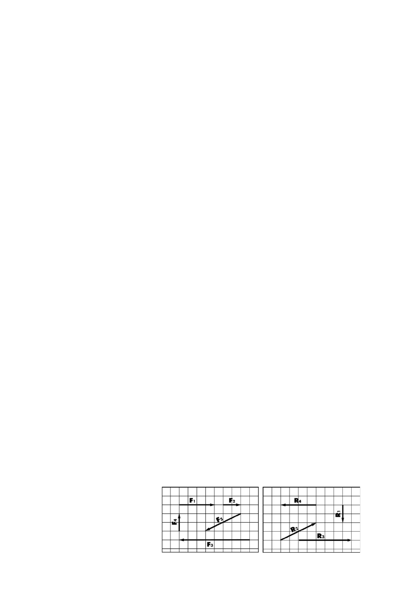
93. Alegeti afirmatia corecta:
a. din polara putem deduce regimurile de zbor ale parapantei
b. din polara putem deduce sarcina utila a parapantei
c. din polara putem deduce raza maxima de viraj a parapantei
94. Alegeti afirmatia corecta:
a. portanta este generata 50% pe extrados
b. portanta este generata 2/3 pe extrados
c. portanta este generata exclusiv pe intrados
95. Portanta este generata de :
a. presiunea din voalura
b. presiunea dinamica din zona bordului de fuga
c. diferenta de presiune dintre extrados si intrados
96. Care dintre urmatoarele forte se regasesc in principiul celor 4 forte:
a. portanta, rezistenta la inaintare, viteza, greutate
b. portanta, rezistenta ohmica, viteza verticala, viteza orizontala
c. portanta, viteza verticala, viteza orizontala, greutate
97. Alegeti afirmatia corecta:
a. portanta este liniara
b. rezistenta la inaintare este direct proportionala cu patratul vitezei
c. rezistenta la inaintare scade brusc la unghi critic
98. Alegeti afirmatia corecta:
a. traseul fileurilor de aer pe extrados este egal cu cel pe intrados
b. traseul fileurilor de aer pe extrados este mai lung
c. traseul fileurilor de aer pe intrados este mai lung
99. Grosimea stratului limita este influentata de:
a. rugozitatea (calitatea) suprafetei aripii
b. porozitatea materialului
c. sarcina alara
100. Unghiul de incidenta se masoara:
a. fata de orizontala
b. fata de directia de zbor
c. intre corda profilului si directia de curgere a fileurilor de aer
101. Functionarea parasutei de rezerva de tip circular (calota) se bazeaza pe:
a. efect coanda
b. rezistenta la inaintare
c. portanta la viteza zero
102. Asupra unui corp se aplică forțele F1 și F2. Ele au același punct de aplicare. Care
este rezultanta R a celor două forțe?
a) R1
b) R2
c) R3
d) R4
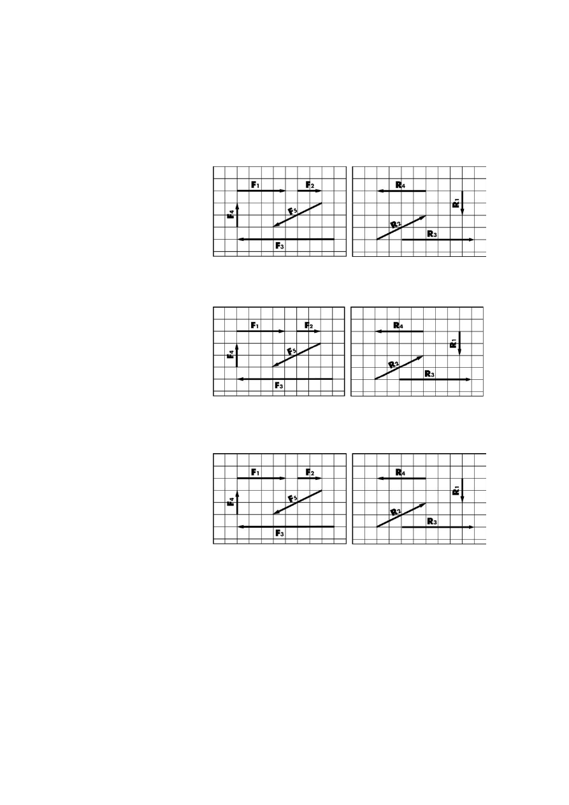
103. Asupra unui corp se aplică forțele F1 și F3. Ele au același punct de aplicare. Care
este rezultanta R a celor două forțe?
a) R1
b) R2
c) R3
d) R4
104. Asupra unui corp se aplică forțele F1 și F4. Ele au același punct de aplicare. Care
este rezultanta R a celor două forțe?
a) R1
b) R2
c) R3
d) R4
105. Asupra unui corp se aplică forțele F1 și F5. Ele au același punct de aplicare. Care
este rezultanta R a celor două forțe?
a) R1
b) R2
c) R3
d) R4
106. Asupra unui corp se aplică forțele F4 și F5. Ele au același punct de aplicare. Care
este rezultanta R a celor două forțe?
a) R1
b) R2
c) R3
d) R4
107. Care din următoarele caracteristici are cea mai mare influență asupra rezistenței la
înaintare a unui corp?
a) Greutatea corpului.
b) Mărimea corpului.
c) Caracteristicile materialului din care este construit corpul.
d) Masa corpului.
108. Care este efectul asupra rezistenței la înaintare a unui corp dacă se dublează
suprafața corpului expusă fluxului de aer?
a) Se înjumătățește.
b) Nu se modifică.
c) Se dublează.
d) Se înmulțește cu 4.

109. Care este efectul asupra rezistenței la înaintare a unui corp dacă crește de 4 ori
suprafața corpului expusă fluxului de aer?
a) Se împarte la 4.
b) Nu se modifică.
c) Se înmulțește cu 4.
d) Se înmulțește cu 16.
110. Care este efectul asupra rezistenței la înaintare a unui corp dacă se înjumătățește
suprafața corpului expusă fluxului de aer?
a) Se înjumătățește.
b) Nu se modifică.
c) Se dublează.
d) Se înmulțește cu 4.
111. Un obiect cu o suprafață de 2 metri pătrați expusă unui flux de aer de 30 km/h
produce o rezistență la înaintare de 300 N la nivelul mării. În aceleași condiții, ce
rezistență la înaintare produce un obiect de formă similară dar cu o suprafață expusă
de 4 metri pătrați?
a) În jur de 150 N.
b) În jur de 300 N.
c) În jur de 600 N.
d) În jur de 900 N.
112. Un obiect cu o suprafață de 2 metri pătrați expusă unui flux de aer de 30 km/h
produce o rezistență la înaintare de 300 N la nivelul mării. În aceleași condiții, ce
rezistență la înaintare produce un obiect de formă similară dar cu o suprafață expusă
de 1 metru pătrat?
a. În jur de 150 N.
b. În jur de 300 N.
c. În jur de 600 N.
d. În jur de 900 N.
113. Un obiect cu o suprafață de 8 metri pătrați expusă unui flux de aer de 30 km/h
produce o rezistență la înaintare de 1200 N la nivelul mării. În aceleași condiții, ce
rezistență la înaintare produce un obiect de formă similară dar cu o suprafață expusă
de 2 metri pătrați?
a. În jur de 150 N.
b. În jur de 300 N.
c. În jur de 600 N.
d. În jur de 900 N.
114. Un obiect cu o suprafață de 0,5 metri pătrați expusă unui flux de aer de 30 km/h
produce o rezistență la înaintare de 150 N la nivelul mării. În aceleași condiții, ce
rezistență la înaintare produce un obiect de formă similară dar cu o suprafață expusă
de 3 metri pătrați?
a. În jur de 150 N.
b. În jur de 300 N.
c. În jur de 600 N.
d. În jur de 900 N.
115. Care din următorii factori are un efect semnificativ asupra rezistenței la înaintare a
unui obiect?
a) Greutatea obiectului.
b) Umiditatea relativă a aerului.
c) Caracteristicile materialului din care este construit obiectul.
d) Viteza fluxului de aer.

116. Dacă viteza fluxului de aer la care expus un corp se dublează,
a) rezistența la înaintare se va dubla.
b) rezistența la înaintare se va înmulți cu 4.
c) rezistența la înaintare se va înmulți cu 8.
d) rezistența la înaintare se va înmulți cu 16.
117. Dacă viteza fluxului de aer la care expus un corp se triplează,
a) rezistența la înaintare se va înmulți cu 3.
b) rezistența la înaintare se va înmulți cu 6.
c) rezistența la înaintare se va înmulți cu 9.
d) rezistența la înaintare se va înmulți cu 12.
118. Dacă viteza fluxului de aer la care expus un corp crește de 4 ori,
a) rezistența la înaintare se va dubla.
b) rezistența la înaintare se va înmulți cu 4.
c) rezistența la înaintare se va înmulți cu 8.
d) rezistența la înaintare se va înmulți cu 16.
119. Dacă viteza fluxului de aer la care expus un corp se injumătățește,
a) rezistența la înaintare se va dubla.
b) rezistența la înaintare se va înmulți cu 4.
c) rezistența la înaintare se vaimpărți cu 2.
d) rezistența la înaintare se vaimpărți cu 4.
120. Un obiect cu o suprafață de 2 metri pătrați expusă unui flux de aer de 30 km/h
produce o rezistență la înaintare de 300 N la nivelul mării. Care va fi rezistența la
înaintare a aceluiași obiect într-un flux de aer de 60 km/h?
a) În jur de 300 N.
b) În jur de 600 N.
c) În jur de 900 N.
d) În jur de 1200 N.
121. Un obiect cu o suprafață de 0,75 metri pătrați expusă unui flux de aer de 30 km/h
produce o rezistență la înaintare de 100 N la nivelul mării. Care va fi rezistența la
înaintare a aceluiași obiect într-un flux de aer de 60 km/h?
a) În jur de 300 N.
b) În jur de 600 N.
c) În jur de 900 N.
d) În jur de 1200 N.
122. Un obiect cu o suprafață de 2 metri pătrați expusă unui flux de aer de 80 km/h
produce o rezistență la înaintare de 1200 N la nivelul mării. Care va fi rezistența la
înaintare a aceluiași obiect într-un flux de aer de 40 km/h?
a) În jur de 300 N.
b) În jur de 600 N.
c) În jur de 900 N.
d) În jur de 1200 N.
123. Un obiect cu o suprafață de 0,75 metri pătrați expusă unui flux de aer de 20 km/h
produce o rezistență la înaintare de 100 N la nivelul mării. Care va fi rezistența la
înaintare a aceluiași obiect într-un flux de aer de 60 km/h?
a) În jur de 300 N.
b) În jur de 600 N.
c) În jur de 900 N.
d) În jur de 1200 N.

124. Care din următoarele caracteristici are cea mai mare influență asupra rezistenței la
înaintare a unui corp?
a) Umiditatea absolută a aerului.
b) Gradientul presiunii.
c) Densitataea aerului.
d) Diferența dintre temperatură și punctul de rouă.
125. Dacă densitea fluxului de aer la care este expus un corp se dublează, ce se va
întămpla cu rezistența la înaintare a corpului?
a) Se înjumătățește.
b) Nu se modifică.
c) Se dublează.
d) Crește de 4 ori.
126. Dacă densitea fluxului de aer la care este expus un corp se injumătățește, ce se va
întămpla cu rezistența la înaintare a corpului?
a) Se înjumătățește.
b) Nu se modifică.
c) Se dublează.
d) Crește de 4 ori.
127. Dacă un obiect expus unui flux de aer se îndepărteză de suprafața pâmăntului ce se
va întâmpla cu rezistența la înaintare a acestuia?
a) Va crește.
b) Nu se modifică.
c) Va scădea până la troposferă după care va crește din cauza schimbării
temperaturii.
d) Va scădea.
128. Dacă un obiect expus unui flux de aer se îndepărteză de suprafața pâmăntului ce se
va întâmpla cu rezistența la înaintare a acestuia?
a) Scade liniar.
b) Scade mai repede în straturile inferioare ale atmosferei de cât în cele
superioare.
c) Scade mai repede în straturile superioare ale atmosferei de cât în cele
inferioare.
d) Scade în straturile inferioare ale atmosferei și crește în straturile superioare.
129. Un corp expus unui flux de aer la altitudinea de 4.400 m deasupra nivelului mării va
avea,
a) aproximativ 90 % din rezistența la înaintare de la nivelul mării.
b) aproximativ 81 % din rezistența la înaintare de la nivelul mării.
c) aproximativ 72 % din rezistența la înaintare de la nivelul mării.
d) aproximativ 64 % din rezistența la înaintare de la nivelul mării.
130. Un corp expus unui flux de aer la altitudinea de 3.300 m deasupra nivelului mării va
avea,
a) aproximativ 90 % din rezistența la înaintare de la nivelul mării.
b) aproximativ 81 % din rezistența la înaintare de la nivelul mării.
c) aproximativ 72 % din rezistența la înaintare de la nivelul mării.
d) aproximativ 64 % din rezistența la înaintare de la nivelul mării.
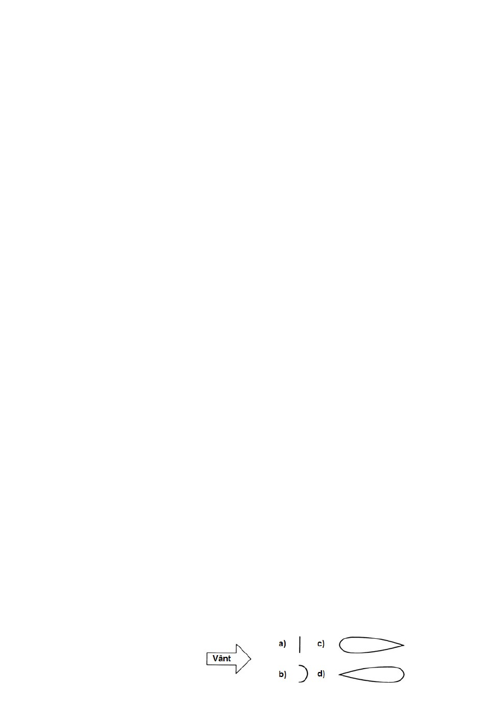
131. Un corp expus unui flux de aer la altitudinea de 2.200 m deasupra nivelului mării va
avea,
a) aproximativ 90 % din rezistența la înaintare de la nivelul mării.
b) aproximativ 81 % din rezistența la înaintare de la nivelul mării.
c) aproximativ 72 % din rezistența la înaintare de la nivelul mării.
d) aproximativ 64 % din rezistența la înaintare de la nivelul mării.
132. Un corp expus unui flux de aer la altitudinea de 1.100 m deasupra nivelului mării va
avea,
a) aproximativ 90 % din rezistența la înaintare de la nivelul mării.
b) aproximativ 81 % din rezistența la înaintare de la nivelul mării.
c) aproximativ 72 % din rezistența la înaintare de la nivelul mării.
d) aproximativ 64 % din rezistența la înaintare de la nivelul mării.
133. Care din următoarele caracteristici are cea mai mare influență asupra rezistenței la
înaintare a unui corp?
a) Forma corpului.
b) Greutatea corpului.
c) Masa corpului.
d) Caracteristicile materialului din care este construit corpul.
134. Care din următorii coeficenți este folosit pentru calcularea rezistenței la înaintare a
unui corp?
a) Ca (sau Cl în engleză, l de la lift)
b) Cb
c) Cx (sau Cd în engleză, d de la drag)
d) Cy
135. Un corp cu un coeficient aerodinamic de 1,3 comparativ cu un corp cu coeficient
aerodinamic de 1 are în aceleași condiții,
a) aproximativ de 3 ori mai multă rezistență la înaintare.
b) aproximativ de 3 ori mai puțină rezistență la înaintare.
c) aproximativ cu 30 % mai multă rezistență la înaintare.
d) aproximativ cu 30 % mai puțină rezistență la înaintare.
136. Un corp cu un coeficient aerodinamic de 0,33 comparativ cu un corp cu coeficient
aerodinamic de 1 are în aceleași condiții,
a) aproximativ de 3 ori mai multă rezistență la înaintare.
b) aproximativ de 3 ori mai puțină rezistență la înaintare.
c) aproximativ cu 30 % mai multă rezistență la înaintare.
d) aproximativ cu 30 % mai puțină rezistență la înaintare.
137. Un corp cu un coeficient aerodinamic de 0,05 comparativ cu un corp cu coeficient
aerodinamic de 1 are în aceleași condiții,
a) aproximativ de 5 ori mai multă rezistență la înaintare.
b) aproximativ de 50 ori mai puțină rezistență la înaintare.
c) aproximativ de 2 ori mai puțină rezistență la înaintare.
d) aproximativ de 20 ori mai puțină rezistență la înaintare.
138. Obiectele desenate mai jos au coeficientul aerodinamic Cx de 0,08 0,17 1 și
1,3. Care dintre ele are coeficientul Cx 0,08?
a)
b)
c)
d)
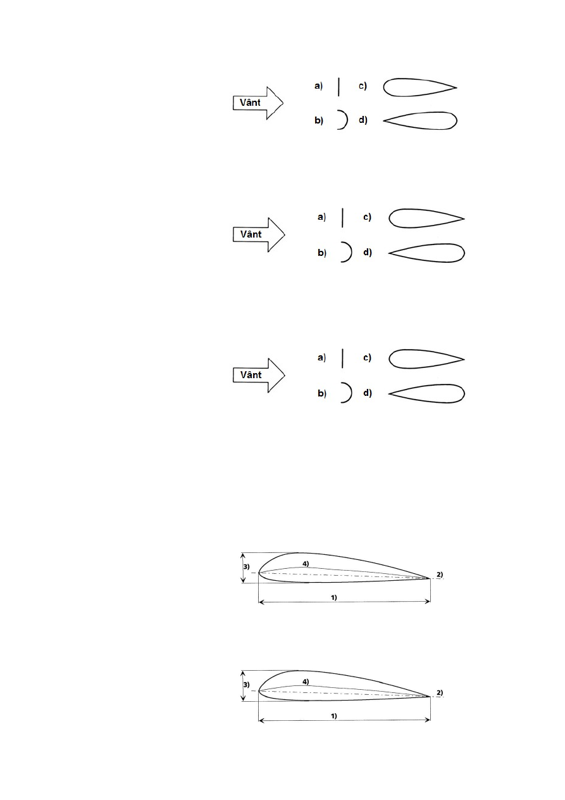
139. Obiectele desenate mai jos au coeficientul aerodinamic Cx de 0,08 0,17 1 și
1,3. Care dintre ele are coeficientul Cx 0,17?
a)
b)
c)
d)
140. Obiectele desenate mai jos au coeficientul aerodinamic Cx de 0,08 0,17 1 și
1,3. Care dintre ele are coeficientul Cx 1?
a)
b)
c)
d)
141. Obiectele desenate mai jos au coeficientul aerodinamic Cx de 0,08 0,17 1 și
1,3. Care dintre ele are coeficientul Cx 1,3?
a)
b)
c)
d)
142. Care dintre următorii parametri vor avea cea mai mare influență asupra aerodinamici
unui corp?
a) densitatea moleculară a corpului.
b) masa corpului.
c) greutatea specifică a corpului.
d) caracteristicile suprafeței corpului.
143. Care dintre următoarele numere reprezintă coarda profilului?
a) 1
b) 2
c) 3
d) 4
144. Care dintre următoarele numere reprezintă grosimea profilului?
a) 1
b) 2
c) 3
d) 4
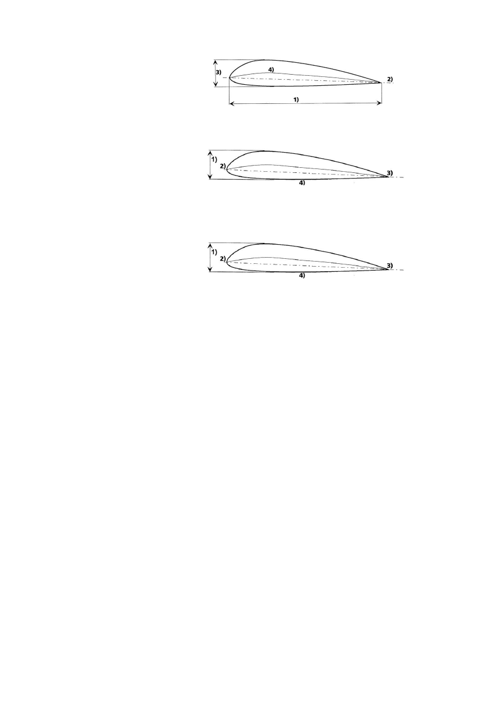
145. Care dintre următoarele numere reprezintă adâncimea profilului?
a) 1
b) 2
c) 3
d) 4
146. Care dintre următoarele numere reprezintă bordul de atac al profilului?
a) 1
b) 2
c) 3
d) 4
147. Care dintre următoarele numere reprezintă bordul de fugă al profilului?
a) 1
b) 2
c) 3
d) 4
148. Profilul aripii
a) este practic identic pentru toate aeronavele nemotorizate.
b) este determinat pentru fiecare aeronavă în funcție de caracteristicile de
zbor dorite.
c) are o influență redusă asupra performanței aeronavei, deoarece aceasta este
determinată în primul rând de greutatea totală.
d) este determinat de unghiul de atac.
149. În majoritatea cazurilor, profilulurile aripilor aeronavelor care se deplasează lent,
cum ar fi aeronavele lansate de pe picioare sunt profiluri
a) relativ groase și simetrice.
b) relativ subțiri și asimetrice.
c) relativ subțiri și simetrice.
d) relativ groase și asimetrice.
150. Termenul "unghi de atac" reprezintă unghiul dintre
a) coarda profilului și orizontală.
b) coarda profilului și vântul relativ.
c) intradosul și extradosul aripilor la marginea posterioară.
d) orizontala si vântul relativ.
151. Dacă aripă produce portanță sau nu depinde, printre altele, de
a) unghiul de atac.
b) suprafața sa.
c) indicele derezistențăla înaintare Cx al profilului aripii.
d) greutatea ei.
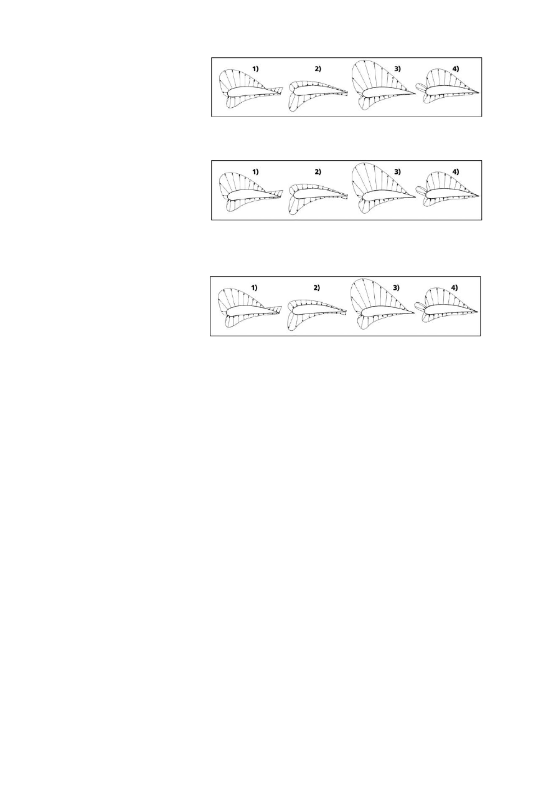
152. Care dintre următoarele profiluri expuse vântului are cel mai mare unghi de atac?
a) 1
b) 2
c) 3
d) 4
153. Care dintre următoarele profiluri expuse vântului are unghi negativ de atac de -10°?
a) 1
b) 2
c) 3
d) 4
154. Care dintre următoarele profiluri expuse vântului are unghi de atac de 0°?
a) 1
b) 2
c) 3
d) 4
155. Care este mai mult sau mai puțin distribuția portanței pe o aripă care este expusă
unui vânt relativ cu un unghi de atac de + 10 °?
a) 1/2 pe extrados, 1/2 pe intrados.
b) 1/3 pe extrados, 2/3 pe intrados.
c) 2/3 pe extrados, 1/3 pe intrados.
d) 1/4 pe extrados, 3/4 pe intrados.
156. Care dintre următoarele afirmații despre distribuția portanței este corectă pentru o
aripă cambrată care zboară cu un unghi de atac pozitiv de 10 °?
a) 2/3 din portanță este creată pe prima treime a aripii.
b) 1/2 din portanță este creată pe prima treime a aripii.
c) 1/3 din portanță este creată pe prima treime a aripii.
d) 2/3 din portanță este creată pe cea de-a doua treime a aripii.
157. Care dintre următoarele seturi de patru factori influențează portanța generată de o
aripă?
a) suprafața aripii, coeficientul de portanță, coeficientul de rezistență la înaintare,
densitatea aerului.
b) coeficientul de portanță, densitatea aerului, viteza fluxului de aer, greutatea.
c) densitatea aerului, viteza fluxului de aer, coeficientul de portanță, coeficientul
de rezistență la înaintare.
d) suprafața aripii, coeficientul de portanță, densitatea aerului, viteza
fluxului de aer.
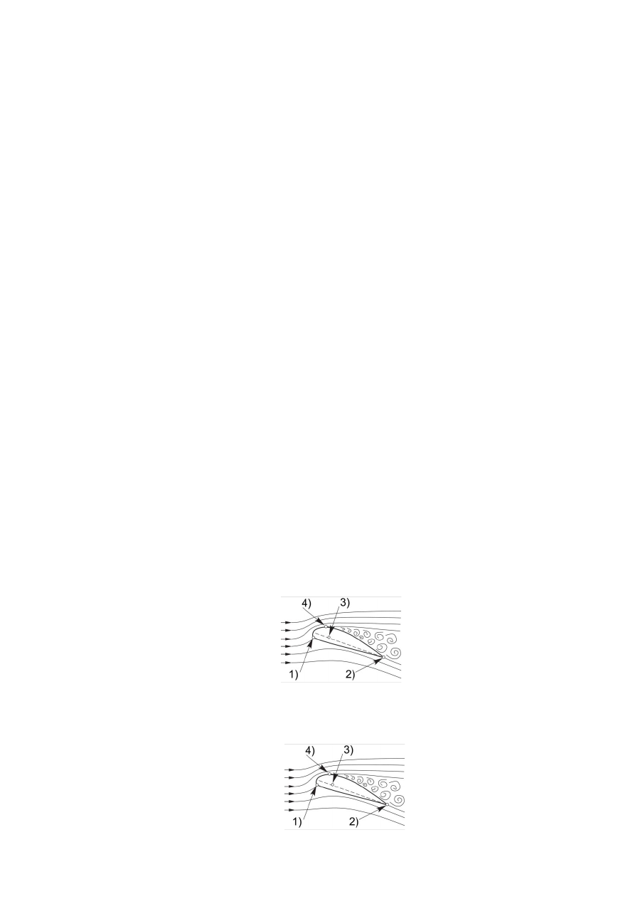
158. Dacă unghiul de atac al unei parapante care zboară cu cea mai bună finețe este redus
cu 2° atunci
a) viteza de zbor se reduce.
b) viteza de zbor nu se modifică.
c) crește viteza zborului.
d) viteza de zbor crește inițial și apoi se stabilizează la valoarea inițială.
159. Dacă unghiul de atac al unei parapante care zboară cu cea mai bună finețe este redus
cu 2° atunci
a) coeficiențul de portanță Cz (CL) crește.
b) coeficiențul de portanță Cz (CL) nu se modifică.
c) coeficiențul de portanță Cz (CL) scade.
d) coeficiențul de portanță Cz (CL) crește inițial și momentan înainte de a reveni
la valoarea sa anterioară.
160. Dacă unghiul de atac al unei parapante care zboară cu cea mai bună finețe crește cu
2 ° atunci
a) viteza zborului scade.
b) viteza de zbor nu se modifică.
c) crește viteza zborului.
d) viteza de zbor crește inițial și apoi se stabilizează la valoarea inițială.
161. Dacă unghiul de atac al unei parapante care zboară cu cea mai bună finețe crește cu
2 ° atunci
a) coeficiențul de portanță Cz (CL) crește.
b) coeficiențul de portanță Cz (CL) nu se modifică.
c) coeficiențul de portanță Cz (CL) scade.
d) coeficiențul de portanță Cz (CL) crește inițial și momentan înainte de a reveni
la valoarea sa anterioară.
162. Relația dintre portanța și rezistențala înaintare unei aripi depinde în principal de
a) suprafața aripii.
b) densitatea aerului.
c) unghiul de atac.
d) viteza fluxului de aer.
163. Care dintre literele din următoarea diagramă indică punctul de stagnare?
a) 1
b) 2
c) 3
d) 4
164. Care dintre literele din următoarea diagramă indică centrulpresiunii?
a) 1
b) 2
c) 3
d) 4
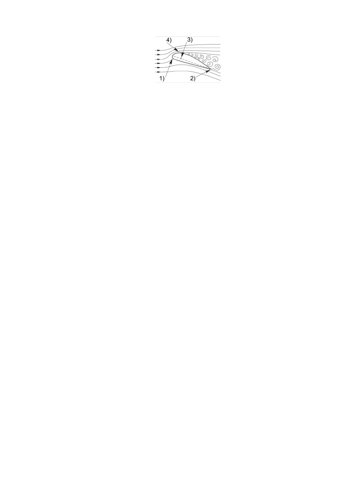
165. Care dintre literele din următoarea diagramă indică punctul de angajare?
a) 1
b) 2
c) 3
d) 4
166. Termenul "punct de angajare" descrie
a) punctul în care fluxul de aer de pe extrados a aripii întâlnește din nou fluxul
de pe intrados.
b) punctul de aplicare al forței aerodinamice rezultate.
c) punctul în care fluxul de aer este împărțit între extradosul și intradosul
pfofilului.
d) punctul în care fluxul de aer se separă de aripă.
167. Când o parapantă zboară la încărcare maximă, punctul de angajare
a) are loc la o viteză mai mare decât la încărcarea minimă.
b) apare la aceeași viteză și unghi de atac independent de sarcină.
c) nu apare niciodată.
d) are loc la o viteză mai mică decât cea la îcărcare minimă.
168. Atunci când o parapantă zboară la încărcare minimă, punctul de angajare apare
a) la o viteză mai mare decât la încărcare maximă.
b) la aceeași viteză și unghi de atac independent de sarcină.
c) la un unghi mai mic de atac.
d) la o viteză mai mică decât la încărcare maximă.
169. Termenul de punct de stagnare definește
a) trecerea de la stratul laminar la stratul de graniță turbulent.
b) punctul de aplicare al forței aerodinamice rezultate.
c) punctul în care fluxul de aer este împărțit între extradosul și intradosul
aripilor.
d) punctul în care fluxul de aer se separă de aripă.
170. Dacă unghiul pozitiv de atac al unei aripi într-un flux de aer se mărește, punctul de
stagnare se deplasează
a) pe extradosul aripii spre bordul de fugă.
b) pe intradosul aripii spre bordul de fugă.
c) pe extradosul aripii spre bordul de atac.
d) pe intradosul aripii spre bordul de atac.
171. Dacă unghiul pozitiv de atac al unei aripi într-un flux de aer scade, punctul de
stagnare
a) rămâne staționar.
b) se deplasează spre bordul de fugă pe intradosul aripii.
c) se deplasează spre bordul de atac pe extradosul aripii.
d) se deplasează spre bordul de atac pe intradosul aripii.
172. Termenul "centru de presiune" înseamnă:
a) trecerea de la un flux laminar la flux turbulent a stratului limită.
b) punctul de aplicare al forței aerodinamice rezultate.
c) punctul în care fluxul de aer este împărțit între intradosul și extradosul
aripilor.

d) centrul de masă a pilotului și a întregului echipament combinat.
173. Termenul "anvergura aripii" este definit ca
a) distanța medie dintre dordul de atac și bordul de fugă ale unei aripi.
b) distanța dintre colțurile stângi și drepte ale aripii.
c) diferența de unghi de atac a secțiunii transversale a aripii în diferite puncte de-
a lungul aripii.
d) încărcarea medie pe unitate a suprafeței aripii.
174. Termenul "coardă medie" este definit ca
a) distanța medie dintre dordul de atac și bordul de fugă ale unei aripi.
b) distanța dintre colțurile stângi și drepte ale aripii.
c) diferența de unghi de atac a secțiunii transversale a aripii în diferite puncte de-
a lungul aripii.
d) încărcarea medie pe unitate a suprafeței aripii.
175. Termenul "încărcarea alară" este definit ca
a) distanța medie dintre dordul de atac și bordul de fugă ale unei aripi.
b) distanța dintre colțurile stângi și drepte ale aripii.
c) diferența de unghi de atac a secțiunii transversale a aripii în diferite puncte de-
a lungul aripii.
d) încărcarea medie pe unitate a suprafeței aripii.
176. Încărcarea alară a unui parapante este
a) încărcare / suprafața aripii.
b) (presiunea aerului / 2) x (viteza aerului) ².
c) greutatea totală / suprafața aripii.
d) (greutatea pilotului + greutatea echipamentului) / (aripă) ².
177. Termenul "alungirea aripii" este definit ca relația dintre
a) profunzimea profilului și coarda medie a aripii.
b) anvergura aripii și coarda medie a aripii.
c) pătratul anvergurii și pătratul coardei medii.
d) cea mai mare și mai mică coardă a aripii.
178. Alungirea unei aripi este calculată în modul următor
a) (anvergura) ² / suprafața aripii.
b) (coarda medie) ² / suprafața aripii.
c) anvergura x coarda medie.
d) coarda medie x suprafața aripii.
179. Aripile cu o alungire mare au
a) anvergura mare și coarda medie mare.
b) anvergura mică și coarda medie mare.
c) anvergura mică și coarda medie mică.
d) anvergura mare și coarda medie mică.
180. Aripile cu o alungire mică au
a) anvergura mare și coarda medie mare.
b) anvergura mică și coarda medie mare.
c) anvergura mică și coarda medie mică.
d) anvergura mare și coarda medie mică.

181. Alungirea unei aripi este 5. Care dintre următoarele afirmații este corectă?
a) Suprafața sa este de cinci ori mai mare decât anvergura sa.
b) Anvergura sa este de cinci ori mai mare decât coarda medie.
c) Coarda medie este de cinci ori mai mare decât anvergura sa.
d) Anvergura sa este de cinci ori mai mare decât suprafața sa.
182. Alungirea unei aripi este 5. Care dintre următoarele afirmații este corectă?
a) Suprafața sa este de cinci ori mai mică decât anvergura sa.
b) Anvergura sa este de cinci ori mai mică decât coarda medie.
c) Coarda medie este de cinci ori mai mică decât anvergura sa.
d) Anvergura sa este de cinci ori mai mică decât suprafața sa.
183. Care este alungirea unei parapante cu următoarele caracteristici:
Anvergură 10 m, Suprafață 25 m², Încărcare minimă 70 kg, Încărcare maximă 95 kg și
Greutatea parapantei 5 kg?
a) 2,5
b) 3,5
c) 4,0
d) 4,5
184. Care este coarda medie a unei parapante cu următoarele caracteristici:
Anvergură 10 m, Suprafață 25 m², Încărcare minimă 70 kg, Încărcare maximă 95 kg și
Greutatea parapantei 5 kg?
a) 2,5
b) 3,5
c) 4,0
d) 4,5
185. Care este încărcarea alară a unei parapante la încărcare maximă, cu următoarele
caracteristici:
Anvergură 10 m, Suprafață 25 m², Încărcare minimă 70 kg, Încărcare maximă 95 kg și
Greutatea parapantei 5 kg?
a) 3,0 kg / m²
b) 3,5 kg / m²
c) 4,0 kg / m²
d) 4,5 kg / m²
186. Care este încărcarea alară a unei parapante la încărcare minimă, cu următoarele
caracteristici:
Anvergură 10 m, Suprafață 25 m², Încărcare minimă 70 kg, Încărcare maximă 95 kg și
Greutatea parapantei 5 kg?
a) 3,0 kg / m²
b) 3,5 kg / m²
c) 4,0 kg / m²
d) 4,5 kg / m²
187. Care este alungirea deltaplanului cu următoarele caracteristici:
Anvergură 10 m, Suprafață 12,5m², Încărcare minimă 60 kg, Încărcare maximă 80 kg,
Greutatea delatplanului 30kg?
a) 4
b) 6
c) 8
d) 10

188. Care este coarda medie a deltaplanului cu următoarele caracteristici:
anvergură 10m, încărcare minimă 65kg, greutate deltaplan 35kg, suprafață 12,5m², încărcare
maximă 90kg?
a) 0,75 m
b) 1,25m
c) 1.75m
d) 2.50m
189. Care este încărcarea alară a aripii la încăcare maximă, cu următoarele caracteristici:
anvergură 10m, suprafață 12,5m², încărcare minimă 65kg, încărcare maximă 90kg, greutate
35kg.
a) 6 kg / m²
b) 8 kg / m²
c) 10 kg / m²
d) 12 kg / m²
190. Care este încărcarea alară a aripii la încăcare minimă, cu următoarele caracteristici:
anvergură 10m, suprafață 12,5m², încărcare minimă 65kg, încărcare maximă 90kg, greutate
35kg.
a) 6 kg / m²
b) 8 kg / m²
c) 10 kg / m²
d) 12 kg / m²
191. Care este alungirea unei parapante moderne de nivel intermediar?
a) aproximativ 3
b) aproximativ 5
c) aproximativ 8
d) aproximativ 12
192. Care este alungirea unui deltaplan modern de nivel intermediar?
a) aproximativ 3
b) aproximativ 5
c) aproximativ 8
d) aproximativ 20
193. Care dintre aripile cu următoarele caracteristici au cea mai mare alungire?
a) suprafață: 32m², anvergură: 8m
b) suprafață: 25m², anvergură: 10m
c) suprafață: 20m², anvergură: 10m
d) suprafață: 24m², anvergură: 12m
194. Care dintre aripile cu următoarele caracteristici au cea mai mică alungire?
a) suprafață: 32m², anvergură: 8m
b) suprafață: 25m², anvergură: 10m
c) suprafață: 20m², anvergură: 10m
d) suprafață: 24m², anvergură: 12m
195. Care dintre aripile cu următoarele caracteristici au cea mai mare alungire?
a) suprafață: 16m², anvergură: 12m
b) suprafață: 20m², anvergură: 10m
c) suprafață: 12m², anvergură: 12m
d) suprafață: 12,5m², anvergură: 10m

196. Care dintre aripile cu următoarele caracteristici au cea mai mică alungire?
a) suprafață: 16m², anvergură: 12m
b) suprafață: 20m², anvergură: 10m
c) suprafață: 12m², anvergură: 12m
d) suprafață: 12,5m², anvergură: 10m
197. Când apar vîrtejurile?
a) Când stratul limită din spatele punctului de desprindere trece la curgere
turbulentă.
b) Atunci când există o diferență de presiune între intrados și extrados.
c) Atunci când colțurile aripilor sunt slab proiectate.
d) Atunci când suspantele produc vârtejuri care sunt deviate în sus.
198. Unde ar trebui să ne așteptăm să găsim vărtejuri lângă o prapantă când aceasta
zboară?
a) la marginea aripii din fața bordului de atac.
b) aproximativ cu o anvergură deasupra centrului presiunii / tracțiunii.
c) în mijlocul aripii și în fața bordului de atac.
d) în spatele bordului de fugă.
199. Dacă crește rezistența la înaintare a unei aripi
a) acest lucru nu are nici un efect asupra unghiului de planare.
b) unghiul de planare scade.
c) unghiul de planare crește.
d) unghiul de planare scade până la un punct și apoi crește brusc.
200. Dacă scade rezistența la înaintare a unei aripi
a) acest lucru nu are nici un efect asupra unghiului de planare.
b) finețea scade.
c) finețea crește.
d) finețea scade până la un punct și apoi crește brusc.
201. Suprafața proiectată este
a) mai mică sau identică cu suprafața desfășurată.
b) la un deltaplan mai mică, la o parapantă mai mare decât suprafața desfășurată.
c) la un deltaplan mai mare, la o parapantă mai mmică decât suprafața
desfășurată.
d) mai mare decât suprafața desfășurată.
202. Rezultanta forțelor aerodinamice este între forțele
a) portanță și rezistență la înaintare.
b) tracțiune și portanță.
c) greutate și tracțiune.
d) greutate și portanță.
203. În timpul zborului stabil, rezultanta forțelor aerodinamice are aceeași valoare ca
a) portanța.
b) greutatea totală.
c) tracțiunea.
d) rezistența la înaintare.
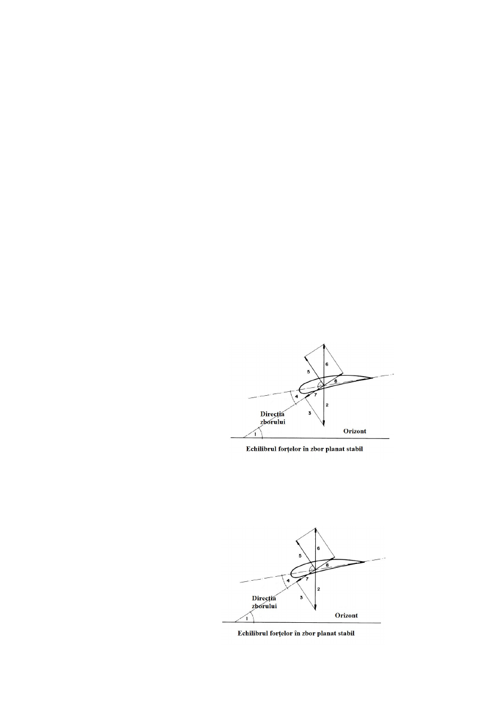
204. În timpul zborului stabil, tracțiunea are aceeași valoare ca
a) portanța.
b) rezultanta forțelor aerodinamice.
c) greutatea totală .
d) rezistența la înaintare.
205. Care forță se opune forței greutății în zbor stabil?
a) portanța
b) tracțiunea
c) rezultanta forțelor aerodinamice
d) rezistența la înaintare
206. Care forță se opune rezistenței la înaintare în zbor stabil?
a) portanța
b) tracțiunea
c) rezultanta forțelor aerodinamice
d) greutatea totală
207. Rezistența la înaintare este o componentă a
a) forței de greutate care acționează paralel cu traiectoria de zbor și produce
mișcarea de înaintare a planorului.
b) rezultantei forțelor aerodinamice și acționează în direcția fluxului de aer.
c) forța de greutate și acționează în direcția opusă fluxului de aer.
d) forței portante și acționează întotdeauna vertical.
208. Care dintre următoarele numere reprezintă finețea și tracțiunea?
a) 4 și 7
b) 4 și 8
c) 1 și 7
d) 1 și 8
209. Care dintre următoarele numere reprezintă portanța și rezistența la înaintare?
a) 6 și 7
b) 5 și 7
c) 6 și 8
d) 5 și 8
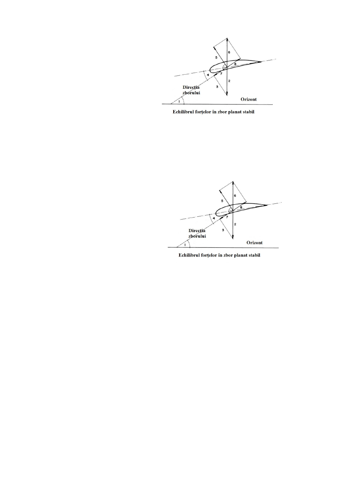
210. Care dintre următoarele numere reprezintă finețea și a greutatea totală?
a) 1 și 7
b) 1 și 2
c) 4 și 7
d) 2 și 4
211. Care dintre următoarele numere reprezintă rezultanta forțelor erodinamice și
tracțiunea?
a) 2 și 7
b) 6 și 8
c) 2 și 8
d) 6 și 7
212. La o parapantă, mișcarea în jurul axei longitudinale se numește
a) spin.
b) girație.
c) tangaj.
d) ruliu.
213. La o parapantă, mișcarea în jurul axei transversale se numește
a) pendul.
b) girație.
c) ruliu.
d) tangaj.
214. La o parapantă, mișcarea în jurul axei verticale se numește
a) girație.
b) tangaj.
c) ruliu.
d) spin.
215. O parapantă care se accelerează continuu dacă pilotul nu intervine în mod activ are
a) caracteristici de zbor stabile.
b) caracteristici de zbor indiferente.
c) caracteristici inverse de zbor.
d) caracteristici de zbor instabile.

216. O parapantă care, după fiecare comandă de la pilot, cntinuă să-și mențină
comportementul are
a) caracteristici de zbor stabile.
b) caracteristici de zbor indiferente.
c) caracteristici inverse de zbor.
d) caracteristici de zbor instabile.
217. O parapantă, care revine din zbor rectiliniu accelerat la viteza normală chiar dacă
pilotul nu intervine în mod activ, are
a) caracteristici de zbor stabile.
b) caracteristici de zbor indiferente.
c) caracteristici inverse de zbor.
d) caracteristici de zbor instabile.
218. O parapantă care în condiții line de zbor are o mișcare continuă de girație, fără ca
pilotul să intervină, nu este
a) stabilă direcțional.
b) stabililă transversal.
c) stabilă longitudinal.
d) stabilă pe verticală / înălțime.
219. O parapantă care în condiții line de zbor iți reduce sesizabil unghiul de planare, fără
ca pilotul să intervină, nu este
a) stabilă direcțional.
b) stabililă transversal.
c) stabilă longitudinal.
d) stabilă pe verticală / înălțime.
220. O parapantă care în condiții line de zbor pendulează de-a lungul axei longitudinale,
fără ca pilotul să intervină, nu este
a) stabilă direcțional.
b) stabililă transversal.
c) stabilă longitudinal.
d) stabilă pe verticală / înălțime.
221. Finețea unui planor oferă informații despre relația dintre
a) portanță și greutatea totală.
b) tracțiune și rezistență la înaintare.
c) tracțiune și greutate totală.
d) portanță și rezistență la înaintare.
222. Finețea unui planor oferă informații despre relația dintre
a) portanța pe extrados și intrados ale aripii.
b) valoarea coeficienților Cz (portanță) și Cx (coeficientul aerodinamic) ale
aripii.
c) presiunea statică și dinamică asupra profilului aripii.
d) anvergura și coarda medie a aripii.
223. Finețea unui planor oferă informații despre relația dintre
a) viteza la finețe maximă și viteza la înfundare minimă a planorului.
b) viteza pe orizontală (înaintare) și viteza pe verticală (viteza de înfundare).
c) viteza aerului și viteza aeronavei în raport cu solul.
d) viteza minimă și maximă.

224. Finețea unui planor oferă informații despre relația dintre
a) anvergura și coarda medie a planorului.
b) tracțiunea și greutatea totală.
c) distanța pe orizontală și diferența de altitudine.
d) viteza la cel mai bun unghi de planare și viteza la înfundare minimă.
225. O parapantă cu o finețe de 8 zboară la 800 m deasupra solului. Care este cea mai
lunga distanță pe care o poate zbura în aer calm?
a) 24,0 km
b) 6,4 km
c) 10,0 km
d) 8,1 km
226. O parapantă cu o finețe de 12 zboară la 2.400 m deasupra solului. Care este cea mai
lunga distanță pe care o poate zbura în aer calm?
a) 12,0 km
b) 24,0 km
c) 28,8 km
d) 23,0 km
227. O parapantă a parcurs 5.4 km cu o altitudine de 900 m. Care este finețea ei?
a) 4
b) 5
c) 6
d) 7
228. O parapantă a parcurs 7 km cu o altitudine de 1.400 m. Care este finețea ei?
a) 4
b) 5
c) 6
d) 7
229. Dacă crește finețea, unghiul de planare
a) crește.
b) scade.
c) rămâne același.
d) crește mai întâi, apoi scade.
230. Dacă crește unghiul de planare, finețea
a) crește.
b) scade.
c) rămâne același.
d) crește mai întâi, apoi scade.
231. Cum numim reprezentarea grafică a relației dintre viteza de înaintare și viteza de
înfundare pe întregul interval de viteze al planorului?
a) Emmagram.
b) curba polară a profilului.
c) curba polară a vitezelor.
d) Barogram.
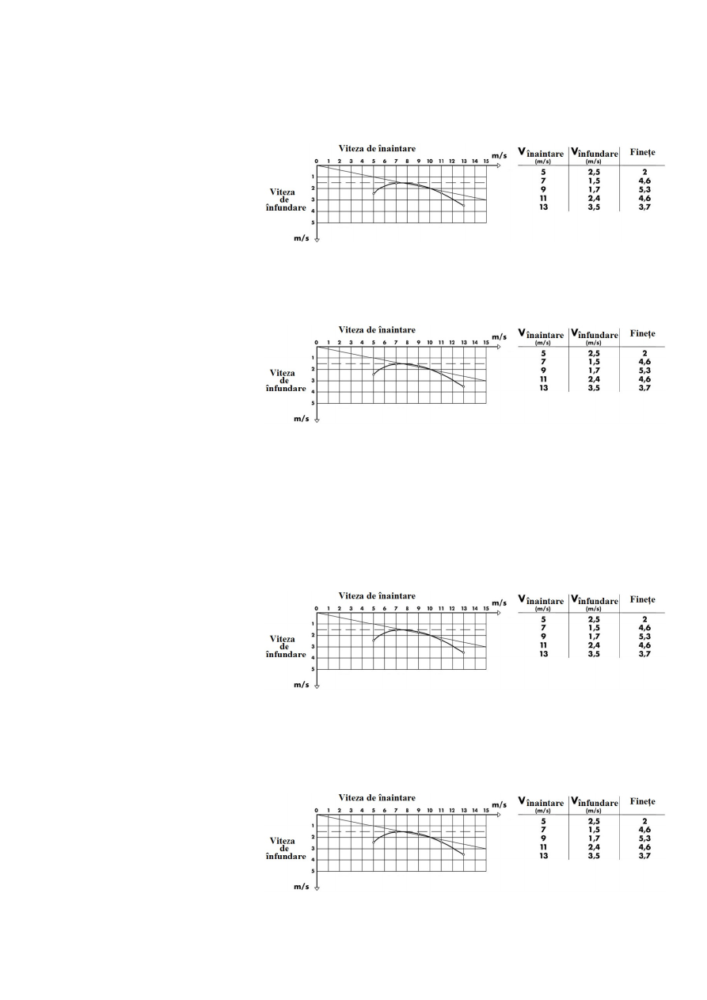
232. Care este viteza parapantei la finețe maximă?
a) 5,6 m / s (20 km / h)
b) 7,2 m / s (26 km / h)
c) 9,2 m / s (33 km / h)
d) 11,3 m / s (41 km / h)
233. Care este cea mai bună finețe a parapantei?
a) 3.7
b) 4.7
c) 5.3
d) 6.8
234. Care este viteza corespunzătoare înfundării minime a următoarei parapante?
a) 5,6 m / s (20 km / h)
b) 7,2 m / s (26 km / h)
c) 9,2 m / s (33 km / h)
d) 11,3 m / s (41 km / h)
235. Care este finețea parapantei dacă zboară la înfundare minimă?
a) 2,0
b) 3,7
c) 4,6
d) 5,3
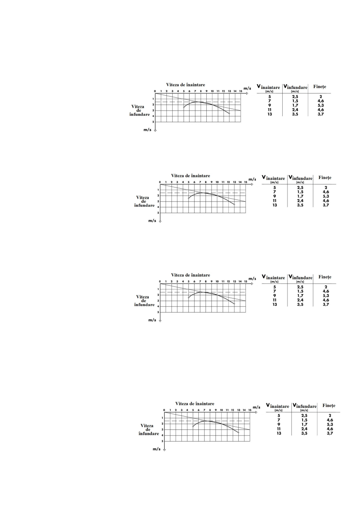
236. Care este viteza minimă a următoarei parapante?
a) 4,2 m / s (15 km / h)
b) 5,6 m / s (20 km / h)
c) 7,2 m / s (26 km / h)
d) 9,2 m / s (33 km / h)
237. Care este finețea următoarei parapante dacă aceasta zboară la viteză minimă?
a) 2,0
b) 3,7
c) 4,6
d) 5,3
238. Care este finețea următoarei parapante dacă aceasta zboară la viteză maximă?
a) 2,0
b) 3,7
c) 4,6
d) 5,3
239. La ce viteză ar trebui să zboare următoarea parapantă pentru a ajunge cât mai
departe dacă are un vânt de față de 8 m / s (29 km / h)?
a) 7 m / s (25 km / h)
b) 9 m / s (32 km / h)
c) 11 m / s (40 km / h)
d) 13,5 m / s (48 km / h)

240. Parapanta X are o finețe de 10 și parapanta Y are o finețe de 5. Care concluzii pot fi
trase?
a) Y are o viteză de înfundare dublă față de aceea a lui X.
b) Y are o viteză de înfundare jumătate din cea a lui X.
c) X zboară de două ori distanța pe care o zboară Y.
d) X zboară jumătate din distanța pe care o zboară Y.
241. O parapantă zboară într-o zonă de descendență. Pentru a obține cea mai bună finețe
acesta va zbura la
a) viteza pentru cea mai bună finețe în aer calm.
b) viteza pentru înfundare minimă.
c) media dintre viteza pentru cea mai bună finețe și viteza pentru înfundare
minimă.
d) o viteză mai mare decât viteza pentru cea mai bună finețe în aer calm.
242. Pentru a obține cea mai bună finețe în raport cu solul într-un vânt de față, o
parapantă va zbura la
a) viteza pentru cea mai bună finețe în aer calm.
b) viteza pentru înfundare minimă.
c) media dintre viteza pentru cea mai bună finețe și viteza pentru înfundare
minimă.
d) o viteză mai mare decât viteza pentru cea mai bună finețe în aer calm.
243. O parapantă zboară la o viteză de 36 km / h (10m / s), iar viteza de înfundare este de
1m / s. Parapanta întânește un curent descendent de aer de 1 m / s. Care este viteza de
înaintare și viteza de înfundare în acest curent?
a) Viteza: 36km / h (10m / s); viteza de înfundare: 1m / s
b) Viteza: 18km / h (05m / s); viteza de înfundare: 1m / s
c) Viteza: 36km / h (10m / s); viteza de înfundare: 2m / s
d) Viteza: 36km / h (10m / s); viteza de înfundare: 0,5 m / s
244. Un deltaplan zboară la o viteză de 36 km / h (10 m / s), cu o viteză de înfundare de 1
m / s. El ajunge într-o zonă de descendență în care aerul coboară cu 1 m / s. Ce se
întâmplă dacă planorul își menține viteza?
a) Finețea se va schimba de la 10 la 5.
b) Finețea va crește de la 5 la 10.
c) Viteza de înfundare și finețea cresc.
d) Viteza de înfundare și finețea scad.
245. O parapantă zboară la o viteză de 54 km / h (15m / s) și are o viteză de înfundare de
2 m / s. Ea întâlnește un vânt de față de 18 km / h (5m / s). Care sunt viteza de
înfundare și viteza de înaintare în raport cu solul?
a) viteza de înfundare: 2m / s, viteza la sol: 54 km / h (15m / s)
b) viteza de înfundare: 3m / s, viteza la sol: 54 km / h (15m / s)
c) viteza de înfundare: 2m / s, viteza la sol: 72 km / h (20m / s)
d) viteza de înfundare: 2m / s, viteza la sol: 36 km / h (10m / s)
246. O parapantă zboară la o viteză de 54 km / h (15m / s) și are o viteză de înfundare de
2m / s. Ea întâlnește un vânt de față de 18 km / h (5m / s). Care va fi finețea?
a) 10,0
b) 6,0
c) 7,5
d) 5,0

247. O parapantă zboară în aer calm, cu o finețe de 10 și o viteză de 43 km / h
(aproximativ 12 m / s). Viteza de înfundare este:
a) aproximativ 1,0 m / s.
b) aproximativ 1,2 m / s.
c) aproximativ 1,5 m / s.
d) aproximativ 1,8 m / s.
248. O parapantă zboară cu o finețe de 8. Dacaă parcurge o distanță de 1.600 de metri în
aer calm câtă altitudine va pierde?
a) 150 m
b) 180 m
c) 200 m
d) 240 m
249. O parapantă zboară cu o finețe de 9 în aer calm, cu o viteză de înfundare de 1m / s.
Care este viteza sa de înaintare?
a) 43,2 km / h (12 m / s)
b) 39,6 km / h (11 m / s)
c) 36,0 km / h (10 m / s)
d) 32,4 km / h (9 m / s)
250. O parapantă zboară cu o viteză de 32,4 km / h (9m / s) în aer calm cu o viteză de
înfundare de 1,5 m / s. Care este finețea?
a) 5,5
b) 6,0
c) 6,5
d) 7,0
251. Viteza de zbor pentru înfundare minimă este
a) puțin mai mică într-un curent de aer ascendent și puțin mai mare într-un
curent de aer descendent, decât în aer calm.
b) Puțin mai mare într-un curent de aer ascendent și puțin mai mică într-un
curent de aer decât în aer calm.
c) Puțin mai mică în curenții de aer ascendenți și descendențo decât în aer calm.
d) Același lucru se întâmplă într-un curent de aer ascendent sau descendent
ca în aer calm.
252. Termenul de "factor de încărcare" definește
a) încărcarea aripilor.
b) capacitatea de încărcare suplimentară pe care producătorul a inclus-o pentru
siguranță.
c) relația dintre încărcarea reală a unui planor în zbor în comparație cu
greutatea totală la sol.
d) relația dintre încărcarea minimă și maximă a unei parapante.
253. Greutatea totală a unui parapante (pilot și echipament) este de 100 kg. Într-un viraj
strâns parapanta este supusă unei încărcării de 250 kg. Care este factorul de
încărcare?
a) 0,25 g
b) 2,5 g
c) 25 g
d) 250 g

254. Ce se întâmplă atunci când o parapantă în zbor stabilizat intră într-un viraj?
a) Nu există schimbări în încărcarea aripii și viteza minimă.
b) Încărcarea aripii și viteza minimă cresc.
c) Încărcarea aripii crește iar viteza minimă rămâne aceeași.
d) Încărcarea aripii rămâne aceeași și crește viteza minimă.